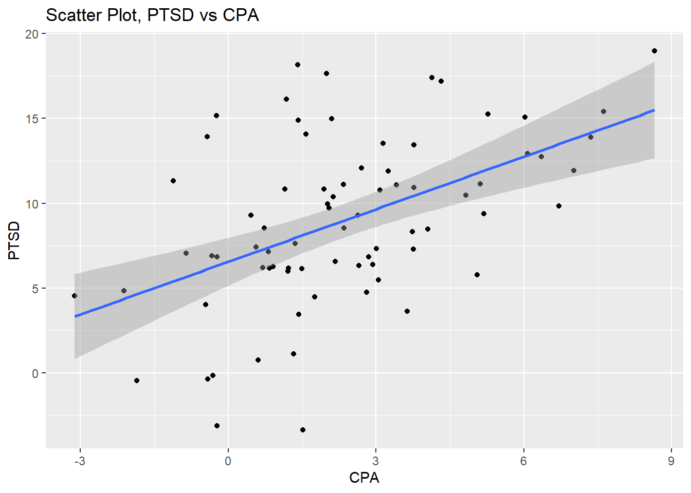
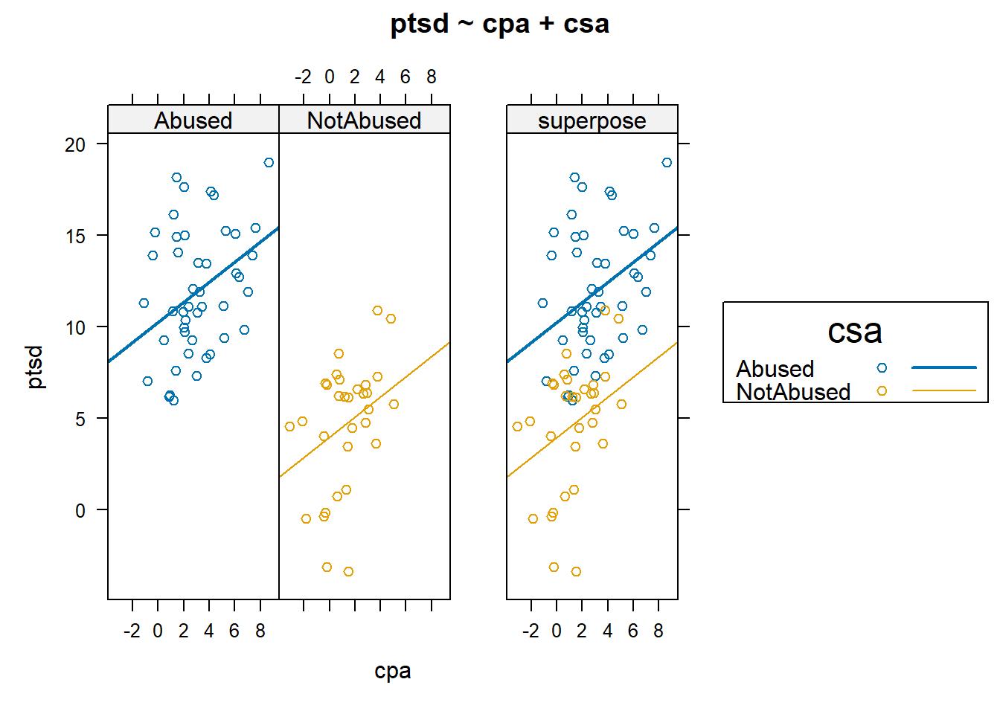

(Draft, 바쁘니까 일단 대충이라도 적어놓음 ㅠ)
1 Description
ANCOVA (Analysis of Covariance, ANCOVA)
- ANOVA에 공변량 (covariate)을 추가하여 분석 수행
- 공변량을 조정하여 독립변수의 순수한 영향을 검정
- 공변량: 연속형 변수로 한정
2 Example
2.1 Load Libraries and Data
2.2 Data Description
'data.frame': 76 obs. of 3 variables:
$ cpa : num 2.048 0.839 -0.241 -1.115 2.015 ...
$ ptsd: num 9.71 6.17 15.16 11.31 9.95 ...
$ csa : Factor w/ 2 levels "Abused","NotAbused": 1 1 1 1 1 1 1 1 1 1 ...R console에 ?sexab를 입력하면 다음과 같은 설명이 나온다.
Post traumatic stress disorder in abused adult females
The data for this example come from a study of the effects of childhood sexual abuse on adult females. 45 women being treated at a clinic, who reported childhood sexual abuse, were measured for post traumatic stress disorder and childhood physical abuse both on standardized scales. 31 women also being treated at the same clinic, who did not report childhood sexual abuse were also measured. The full study was more complex than reported here and so readers interested in the subject matter should refer to the original article.
즉, 요약하면 아동기에 성폭력을 겸험한 성인들의 정신 건강을 측정한 데이터로서, 아동기의 성폭력 경험과 학대 경험이 성인기의 정신건강에 유의한 영향을 미치는지에 대한 실험을 한 것이다.
이 data는 3개의 변수와 76개의 samples을 포함한다.
- cpa : Childhood physical abuse on standard scale, covariate
- ptsd : post-traumatic stress disorder on standard scale, response variable
- csa : Childhood sexual abuse - abused or not abused, independent variable
친절하게 response variable, independent variable 및 covariate을 규명해놓았다.
3 EDA
3.1 Descriptive Statistics
코드
| vars | n | mean | sd | median | trimmed | mad | min | max | range | skew | kurtosis | se | |
|---|---|---|---|---|---|---|---|---|---|---|---|---|---|
| abused | 1 | 45 | 11.941093 | 3.440151 | 11.31277 | 11.883422 | 3.857355 | 5.98491 | 18.99251 | 13.00760 | 0.1556159 | -0.9124483 | 0.5128275 |
| notAbused | 1 | 31 | 4.695874 | 3.519743 | 5.79447 | 4.903441 | 1.978841 | -3.34921 | 10.91447 | 14.26368 | -0.6589170 | -0.2008051 | 0.6321645 |
위의 요약된 기술 통계량들 중 표준 편차는 유사하지만 평균 ptsd가 약 7.245219의 차이를 보여준다. 아래의 histogram역시 성폭력을 경험한 그룹과 경험하지 않은 그룹간의 PTSD 수치가 다른것을 볼 수 있다.
3.2 One-Way ANOVA
성폭력 경험 유무에 따른 PTSD 평균 차이가 통계적으로 유의한지 확인하기 위해 ANOVA를 수행한다.
Df Sum Sq Mean Sq F value Pr(>F)
csa 1 963.5 963.5 79.9 2.17e-13 ***
Residuals 74 892.4 12.1
---
Signif. codes: 0 '***' 0.001 '**' 0.01 '*' 0.05 '.' 0.1 ' ' 1집단간 변수 csa p value가 <0.05 인 것을 확인할 수 있다. csa는 5% 유의수준에서 유의하다.
하지만 PTSD의 변동량은 아동 학대에 의해 설명될 수도 있기 때문에 ptsd의 평균은 csa뿐만 아니라 cpa에 또한 고려되어야한다.
코드

그림과 같이 CPA가 증가하면서 PTSD또한 선형적으로 증가하는 패턴을 관찰할 수 있다. 두 변수간의 상관계수 = 0.49이고 p value= 6.2715909^{-6}으로 보아 두 변수 사이에 선형적인 상관관계가 있는 것으로 보인다.
코드

아동기 성폭력 경험 유/무에도 PTSD와 CPA와 선형적인 관계가 있는 것으로 보이기 때문에 CSA의 PTSD로의 효과를 검정하기 위해선 CPA를 조정할 필요가 있는것으로 보인다.
코드
Df Sum Sq Mean Sq F value Pr(>F)
cpa 1 449.8 449.8 41.98 9.46e-09 ***
csa 1 624.0 624.0 58.25 6.91e-11 ***
Residuals 73 782.1 10.7
---
Signif. codes: 0 '***' 0.001 '**' 0.01 '*' 0.05 '.' 0.1 ' ' 1아동기의 신체적 학대가 일정하다는 가정하에서 PTSD와 성폭력의 순수한 관계는 5% 유의수준에서 유의하고 공변량, CPA를 조정하기전과 그 유의성이 차이가 있음을 관찰할 수 있다.
Analysis of Variance Table
Response: ptsd
Df Sum Sq Mean Sq F value Pr(>F)
cpa 1 449.80 449.80 41.984 9.462e-09 ***
csa 1 624.03 624.03 58.247 6.907e-11 ***
Residuals 73 782.08 10.71
---
Signif. codes: 0 '***' 0.001 '**' 0.01 '*' 0.05 '.' 0.1 ' ' 1
두 csa집단에서 두 회귀선의 기울기 같고 절편이 다르게 나타나는 것을 관찰 할 수있다. 기울기가 같은 이유는 cpa가 ptsd에 영향을 미치는 정도가 두집단에서 일정하도록 공변량으로서 통제 했기 때문이다.